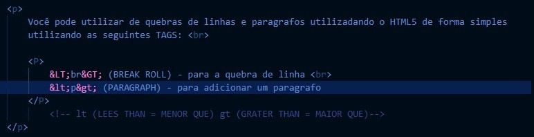

Você pode utilizar de quebras de linhas e paragrafos utilizadando o HTML5 de forma simples utilizando as seguintes TAGS:
<br> (BREAK ROLL) - para a quebra de linha
<p> (PARAGRAPH) - para adicionar um paragrafo
Exemplo de código:

A resposta é SIM! E de forma simples. Precisamos apenas saber quais são os seus respectivos codname, por exemplo: para adicionar-mos uma ceta para a direita podemos utilizar o & e em seguida RARR (rigth arrow) e finaliza com o ; (ponto e virgula) fazendo assim uma →. Para mais informações referente a codname: consultar PDF no github!
Apenas vamos precisar entrar em um site. Uma emojipedia; que é uma biblioteca de emojis... Nese site você ira escolher o emoji que deseja colocar em seu site e copiar o seu codpoint (copiar apenas após o sinal de mais +).
Após copiar, basta apenas digitar a seguinte linha de codigo: & + # + x +codigo que você copiou + ; (ponto e virgula). Simples, né ? 👀